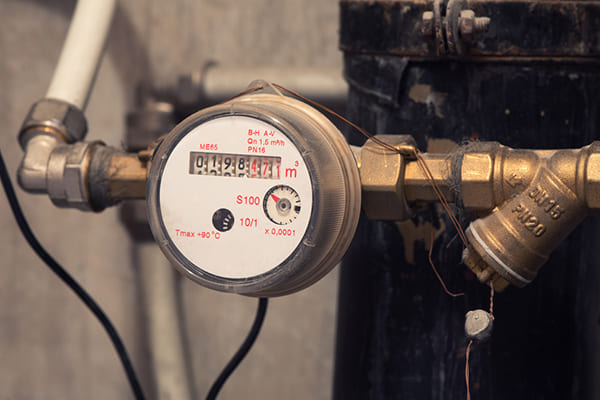
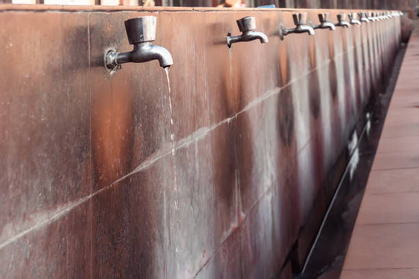

Issues

Lack of Proper Monitoring of Water
Small leaks often go unnoticed without regular inspections, leading to
significant water wastage over time.
Without proper monitoring, maintenance teams may miss issues like broken pipes
or faulty taps, delaying repairs.
Unmonitored lawn irrigation can cause sprinklers to run too long or at
inefficient times, wasting water.

Water Wastage
Cafeterias and kitchens often use large amounts of water for cooking,
cleaning, and washing dishes.
Students sometimes leave taps running while washing hands, leading to
unnecessary water loss.
Broken or inefficient pipes lead to unnoticed water loss.

Over Watering Plants
Over-watering can waterlog soil, harming plant roots and promoting diseases.
Over-watering can waterlog soil, harming plant roots and promoting diseases.
Watering during peak heat leads to high evaporation, wasting water before it
reaches plants.